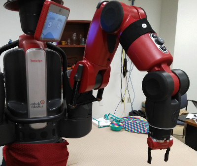

Get Started
First we will use Ein to move the robot around and write simple
programs. Before following these instructions, you should
install Ein into a catkin workspace and verify that you
can connect to your Baxter. Many common problems arise because of
networking misconfigurations, where your $ROS_MASTER_URI,
$ROS_HOSTNAME, and/or $ROS_IP are set incorrectly; verify that
rostopic echo works correctly before proceeding. You should also
make sure Baxter is turned on and enabled. (rosrun baxter_tools
enable_robot.py -e).
Start the screen session using the commands given in
Install. Choose an arm (left or right) to use. Type
`8 to tell screen to go to the left arm’s main Ein window, or `0
to go to the right arm. The screen should be primed with a build
and run command; when it starts, a number of windows should open. Go
to the main window and verify you can see the wrist view. The robot’s
status will appear in text. The frame rate for Ein varies betweeun
10Hz and 25Hz on our machines; if it is much slower than 10Hz, Ein
will be hard to use. Consider obtaining a faster computer.
If at any time you need to quit, you can type ` :quit` in the
screen session.

Verify you can see the wrist view image in the console, and that it is updating as the arm moves. The middle pane (Object Map View) shows a map of the robot’s IK workspace for the arm in crane pose at a particular height. Attainable poses are marked in green and yellow; unattainable poses are marked in red. The robot’s body and end effector position are marked with circles and a line indicating orientation.
Teleoperation
Next, go back to the screen session and change to the Ein console
window by typing `1 for the right arm or `2 for the left
arm. You should see a view like this:

The console is the main way to interact with Ein and control the robot. Type commands at the prompt. You can view the robot’s status in the upper left window. The middle two windows show the stack (but don’t worry about that now; for more information see the Back page). The right window shows Ein’s console output as you run commands.
First, go home. The home position is set toward the side of the robot near the center of its IK workspace in the crane position.
goHome
After running this command, the arm should move to the crane position off to one side, as shown in the following picture.

Try the following commands for moving to other canonical positions. (Be careful that the robot’s workspace is clear.)
assumeCrane1
assumeBackScanningPose
Move back to home position: goHome.
You can also incrementally move the arm in the global x, y, and z
frames. For example, try:
xUp
xDown
Similarly, yUp, yDown moves in the Y frame, and zUp and zDown move
the arm vertically.
By default, the robot is keyed to move in 1 cm
increments. You can change the increment size to 5 cm by issuing:
0.05 setGridSize
To specify robot commands, Ein uses a postfix FORTH-like language
called Back. In the previous example, the argument
0.05 comes before the function (called “word” following FORTH
conventions), named setGridSize.
The grid size is specified in meters. To go back to 1 cm,
call
0.01 setGridSize
Next try running openGripper and closeGripper. You should now be
able to teleoperate the arm to pick up an object that is axis-aligned
with the gripper.
Exercise: Teleoperate some picks.
Teleoperate the robot to pick up a few objects. Try doing this first by watching the arm. Then try putting your back to the robot and use only information from the wrist camera image.
Exercise: Teleoperate some non-axis aligned picks.
You may have noticed in the previous exercise, if the object was not
aligned with the grippers, it was not possible to pick it. To rotate
the gripper, use oZUp and oZDown (with related words for the other
axes), which rotates the gripper in the corresponding frame. The
default amount of rotation is quite small, so you will need to issue
many oZUp’s to achieve appreciable rotation. To simplify this
process, we created a word that duplicates words on the stack. You
can run: ( oZUp ) 10 replicateWord to run oZUp 10 times (or
whatever compound word is in parentheses.) Note that tokenization is
based on white space so you need a space before and after every
parentheses.
Fun Words
Ein contains words to control all parts of the robot. Some fun ones
to try are torsoFanOn, torsoFanOff, and torsoFanAuto (the
default). You can also try lightsOn and lightsOff, happyFace,
sadFace, and neutralFace.
Exercise: Pulse the torso fan.
Write a program to pulse the torso fan several times. You will need
to wait in between each word by running 1 waitForSeconds.
Answer (select to see):
( torsoFanOn 1 waitForSeconds torsoFanOff 1 waitForSeconds ) 10 replicateWord
Timing
By default words run as quickly as possible, without waiting for
actions to complete. There are a variety of words that wait until
certain conditions are met. Most useful is
waitUntilAtCurrentPosition.
Exercise: Wiggle the arm.
Writing a program to move the arm back and forth a few times in a row
using waitUntilAtCurrentPosition and replicateWord.
Answer (select to see):
( xUp xUp waitUntilAtCurrentPosition xDown xDown waitUntilAtCurrentPosition ) 10 replicateWord
Exercise: Clear stacks.
If a program is running and you want to halt it, you can can run
clearStacks to halt it. Try running one of your previous programs to
move the robot, and then run clear stacks to halt it.